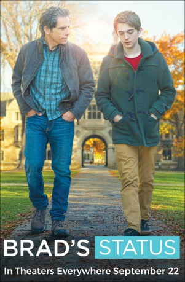

gesehen am 30.08.2018
gesehen am 30.08.2018Alternativ: Brad's Status gesehen am 30.08.2018
 
 IMDB-Wertung: 6.5 / 10
IMDB-Wertung: 6.5 / 10  Metascore:
Metascore: 
A father takes his son to tour colleges on the East Coast and meets up with an old friend who makes him feel inferior about his life's choices.
Jahr: 2017
Dauer: 102 Minuten
FSK: 6
Land: USA Studio: Annapurna PicturesTonspuren: DTS - ,
Untertitel:
Auflösung: 1080p (1920x960) Größe: 6942 MB
Regisseur:  Mike White
Mike White
Drehbuch: Mike White, Mike White
Soundtrack: Mark Mothersbaugh
Darsteller:
 Ben Stiller als Brad Sloan
Ben Stiller als Brad Sloan Austin Abrams als Troy Sloan
Austin Abrams als Troy Sloan Jenna Fischer als Melanie Sloan
Jenna Fischer als Melanie Sloan Michael Sheen als Craig Fisher
Michael Sheen als Craig Fisher Jemaine Clement als Billy Wearslter
Jemaine Clement als Billy Wearslter Luke Wilson als Jason Hatfield
Luke Wilson als Jason Hatfield Karl Graboshas als Admission Officer
Karl Graboshas als Admission Officer Kenny Wong als Mark
Kenny Wong als Mark Frank Fontaine als Older Man
Frank Fontaine als Older Man Dawn Ford als Jason's Executive Assistant
Dawn Ford als Jason's Executive Assistant Rosalba Martinni als Older Latina
Rosalba Martinni als Older Latina Alex Bisping als Beta Male #1
Alex Bisping als Beta Male #1 Jimmy Kimmel als Jimmy Kimmel
Jimmy Kimmel als Jimmy Kimmel Kristen Annese als College Student (uncredited)
Kristen Annese als College Student (uncredited) Pamela Figueiredo als College Girlfriend (uncredited)
Pamela Figueiredo als College Girlfriend (uncredited) Arthur Hiou als Harvard Staff (uncredited)
Arthur Hiou als Harvard Staff (uncredited) Richard Jutras als Panel Show Host (uncredited)
Richard Jutras als Panel Show Host (uncredited) Adrian M. Mompoint als College Student (uncredited)
Adrian M. Mompoint als College Student (uncredited) Leah Procito als Harvard Pedestrian (uncredited)
Leah Procito als Harvard Pedestrian (uncredited) Nathaly Thibault als Wedding Guest (uncredited)
Nathaly Thibault als Wedding Guest (uncredited)Datei: X:\2017(G-M)\Im Zweifel glücklich (2017, FSK6, 1920x960).mkv seit 17.08.2018
Festplatte: HD 2017(A-Z)-2018(A-F)
 Es gibt insgesamt 148 Filme in der Gruppe '2017(G-M)'
Es gibt insgesamt 148 Filme in der Gruppe '2017(G-M)'